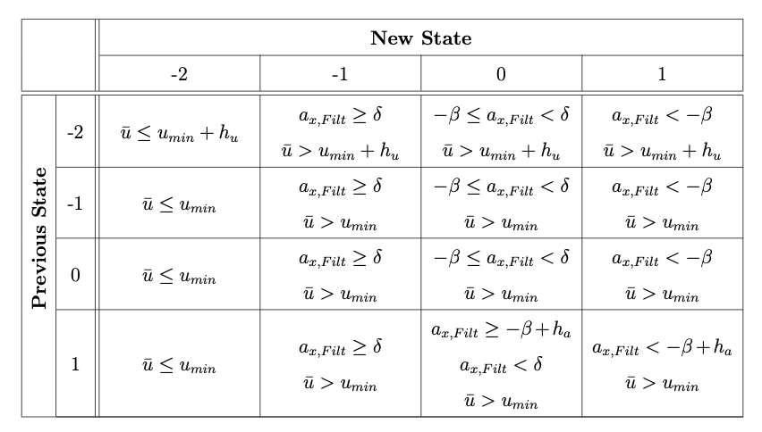
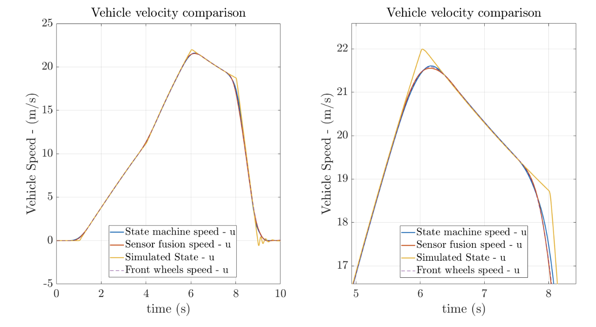

Longitudinal Velocity Estimators
Let us now start talking about the kinematic states observers. The first algorithms that we would like to present are employed for the longitudinal velocity estimation.
The most common way to measure the vehicle longitudinal speed is to focus on the wheel speed. However, the wheels can slide on the road surface and, for this reason, invalidate the measure.
Here, three possible methods for the longitudinal velocity estimation are presented.
Front-Wheels Velocity Estimation
The most common approach to estimate the longitudinal velocity is to focus on the un-driven wheels: since the considered vehicle is rear-wheel-driven, the front wheels speed can be used to estimate the longitudinal velocity. This because, at least in the acceleration case, the front wheels are not subjected to any torque, hence, they do not slide. Nevertheless, in braking, the torque is applied to all wheels and the no-slip assumption is no longer valid.
However, remaining in the acceleration region, the usage of the front wheels to estimate the longitudinal velocity can be a good compromise between simplicity and accuracy. Since the vehicle is front-wheel steering, to increase the estimation accuracy, the velocity of the wheels has to be corrected using the steering angle.
The estimation formula is reported in expression 6 .
State-Machine Estimation
Another simple method for the longitudinal velocity estimation uses a state-machine combining the most accurate data depending on the driving situation. It is dived in four states depending on the vehicle condition: very low speed \((s=-2)\), acceleration \((s=-1)\), constant speed \((s=0)\) and braking \((s=1)\).
If the vehicle is moving under a certain velocity - very low-speed case -, all the four wheels speed are used for the velocity estimation.
In the acceleration case, as it is explained before, only the front wheels can be used for the velocity estimation. In this case, the state machine velocity corresponds with the velocity of the front wheels reported in expression 6
If the vehicle is proceeding at a constant speed, the torque applied to the wheels is almost equal to zero. For this reason, the four wheels speed can be used again for the velocity estimation.
In braking condition, the braking torque is applied to all the wheels. For this reason, any information from the wheel speed can be considered. In this case, the most effective way to estimate the longitudinal velocity is by integrating a filtered version of the longitudinal acceleration \(\left(a_{x, \text { Filt }}\right)\). The main problem of this approach is the acceleration bias that can make the estimation diverges for a long integration time. However, in our case, the braking time is not so long and this approach can return a good velocity estimation.
The state switching logic is reported in table 1, Each intersection between previous states and new states describes the conditions for switching.
The value of \(u_{\min }\) is the velocity threshold under which the vehicle is in the low-speed condition. \(h_{u}\) is a small value introduced to avoid chattering between state \(-2\) and the others. \(\delta\) is a small acceleration value that identifies the upper limit for the constant speed condition. Above the value of \(\delta\), the vehicle is in acceleration state. \(\beta\) has the same function of \(\delta\) but in braking case. However, this value can be higher than its' analogue to include also the deceleration due to the aerodynamic drag. \(h_{a}\) has the same function of \(h_{u}\) but in the acceleration domain.

Table 1: Conditions for switching logic
The state-machine estimation is a simple way to combine longitudinal acceleration from the IMU sensor and the wheels spin. Nevertheless, the estimator output can jump in the state switching. In order to smooth the jumps, the state machine output can be filtered.
Sensor Fusion Estimation
A more sophisticated strategy for the IMU/wheels spin combination is presented by Panzani et al. [15]. In this work, it is demonstrated that a sensor fusion by means Kalman filter can be written using a second-order complementary filtering technique. In this way, quantitative guidelines for the estimator tuning are given.
The basic idea is the introduction of an offset dynamics in the evolution of the longitudinal velocity to account for some unmodelled effects. The usage of this offset can be seen in the system process and measurement equations (relation 11).
where \(u\) and \(o\) are the system states and corresponds to the estimated velocity and the offset dynamics respectively. \(u_{F W}\) is the front wheels estimation of the longitudinal velocity, defined in the expression 6 and \(\epsilon_{1}\) is the noise associated with this measure with variance equal to \(r\left(\epsilon_{1} \backsim N(0, r)\right)\). \(\eta_{1}\) and \(\eta_{2}\) are the noises associated with the process. They are white and normally distributed, with variance equal to \(q_{1}\) and \(q_{2}\) respectively \(\left(\eta_{1} \backsim N\left(0, q_{1}\right)\right.\) and \(\left.\eta_{2} \backsim N\left(0, q_{2}\right)\right)\).
The evolution in time of the estimated states is reported in equation 12. The demonstration is not reported here, however, it resembles the Kalman filter procedure, explained in the previous sections.
where \(\hat{ {x}}=[\hat{u}, \hat{o}]^{T}\) is the estimated state vector, \(u = a_x\) is the process input vector and \(z=u_{F W}\) is the vector of the measure. \(A, B\) and \(C\) are the state-space matrices while \(K\) is the Kalman matrix.
The parameters \(\alpha\) and \(\beta\) can be computed from the relation 13 .
The advantage of a Kalman filter defined as in [15] is that some tuning guidelines are intrinsically given in the design structure. Looking at the second-order complementary filter formulation, it is possible to demonstrate that the natural frequency \(\left(\omega_{n}\right)\) and the damping factor \((\xi)\) of the optimal filters depends on the process and the measurement noise.
Setting the desired natural frequency and damping factor, it is possible to compute the process noises \(q_{1}\) and \(q_{2}\) as a function of the measurement variance \(r\).
| \(\omega_{n}(\mathrm{~Hz})\) | \(\xi\) | \(r\) | \(q_{1}\) | \(q_{2}\) |
|---|---|---|---|---|
| 2 | 1 | 0.01 | 3.16 | 249.37 |
Table 2: Longitudinal velocity estimator - tuning results
Algorithms Performance
In figure 2 the results of the longitudinal velocity estimation are reported for a simulated double throttle step manoeuvre. The yellow line corresponds to the simulated longitudinal velocity that is the actual reference for the estimator outputs. It is possible to see that, since the data are filtered, the estimation does not properly work in the region in which the speed profile is sharp. However, mainly in the acceleration zone, the longitudinal velocity estimation of all algorithms are good. This because, in this region, the front wheels longitudinal velocity is a good approximation of the real velocity.
The sensor fusion estimation takes as inputs the raw (unfiltered) data and the filtering procedure is done by the intrinsic structure of the estimator.

Figure 2: Longitudinal velocity estimation
Proceeding with the analysis, from turning tests, it is possible to notice that for a narrow corner, close to the handling limit, the state machine estimation tends to diverge giving a bad approximation of the longitudinal velocity. The sensor fusion and the front wheel velocity, instead, gives a less accurate estimation with respect to the normal driving case, but the output value of these algorithms stays close to the real one.
In conclusion, when real data are used, it can be noticed that the sensor fusion velocity gives better results in different conditions. The discriminant factor is the performance in the longitudinal slip computation - described in a dedicated section - where the sensor fusion speed gives the best performances.